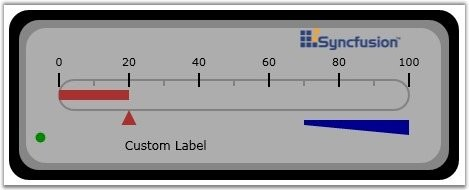

You have now created a Silverlight application and deployed Essential Gauge. Lets see how to create a Linear Gauge in this application. Linear Gauges can be created either with full circle frame type or half circle frame type. This is done either by using XAML code or with C# code.
Step-by-step instructions for creating a Linear Gauge
1. Add the Linear Gauge control to the Panel as follows(the default orientation of the gauge is Vertical).
|
[XAML]
<UserControl x:Class="LinearGaugeHelp.Page" xmlns="http://schemas.microsoft.com/winfx/2006/xaml/presentation" xmlns:x="http://schemas.microsoft.com/winfx/2006/xaml" xmlns:syncfusion="clr-namespace:Syncfusion.Silverlight.Gauge;assembly=Syncfusion.Gauge.Silverlight" Width="700" Height="600"> <Grid x:Name="LayoutRoot" Background="White"> <syncfusion:LinearGauge Height="450" Width="170" VerticalAlignment="Top" OuterFrameBrush="Black" Orientation="Horizontal" Background="DarkGray" InnerFrameBrush="Gray" x:Name="LinearGauge1" RadiusX="20" RadiusY="20" InnerFrameOffset="15" OuterFrameOffset="20"/> </Grid> |
|
[C#]
LinearGauge lineargauge = new LinearGauge(); lineargauge.Width = 150; lineargauge.Height = 350; lineargauge.Orientation = GaugeOrientation.Horizontal; lineargauge.Background = new SolidColorBrush(Colors.Gray); lineargauge.InnerFrameBrush = new SolidColorBrush(Colors.LightGray); lineargauge.OuterFrameBrush = new SolidColorBrush(Colors.Black); lineargauge.OuterFrameOffset = 20; lineargauge.InnerFrameOffset = 10; lineargauge.RadiusX = 20; lineargauge.RadiusY = 20; LayoutRoot.Children.Add(lineargauge); |
2. To add a Scale to the Linear Gauge in Silverlight Application, use the below code.
|
[XAML]
<syncfusion:LinearGauge Height="450" Width="170" VerticalAlignment="Top" OuterFrameBrush="Black" Orientation="Horizontal" Background="DarkGray" InnerFrameBrush="Gray" x:Name="LinearGauge1" RadiusX="20" RadiusY="20" InnerFrameOffset="15" OuterFrameOffset="20"> <syncfusion:LinearGauge.Scales> <syncfusion:LinearScale Minimum="0" Maximum="100" Foreground="White" MajorIntervalValue="20" MinorIntervalValue="10" ScaleBarSize="30" ScaleBarLength="350" ShadowOffset="4" BorderBrush="#7B7C7C" BorderThickness="2" RadiusX="15" RadiusY="15"> </syncfusion:LinearGauge.Scales> </syncfusion:LinearGauge> |
|
[C#]
LinearGauge lineargauge = new LinearGauge(); lineargauge.Width = 150; lineargauge.Height = 350; lineargauge.Orientation = GaugeOrientation.Horizontal; lineargauge.Background = new SolidColorBrush(Colors.Gray); lineargauge.InnerFrameBrush = new SolidColorBrush(Colors.LightGray); lineargauge.OuterFrameBrush = new SolidColorBrush(Colors.Black); lineargauge.OuterFrameOffset = 20; lineargauge.InnerFrameOffset = 10; lineargauge.RadiusX = 20; lineargauge.RadiusY = 20;
LinearScale linearscale = new LinearScale(); linearscale.ScaleBarSize = 15; linearscale.ScaleBarLength = 250; linearscale.MajorIntervalValue = 20; linearscale.MinorIntervalValue = 10; linearscale.Minimum = 0; linearscale.Maximum = 100; linearscale.BorderBrush = new SolidColorBrush(Colors.Black); linearscale.BorderThickness = new Thickness(2); |
3. To add a Pointer to the Linear Gauge in Silverlight Application, use the below code.
|
[XAML]
<syncfusion:LinearGauge Height="450" Width="170" VerticalAlignment="Top" OuterFrameBrush="Black" Orientation="Horizontal" Background="DarkGray" InnerFrameBrush="Gray" x:Name="LinearGauge1" RadiusX="20" RadiusY="20" InnerFrameOffset="15" OuterFrameOffset="20"> <syncfusion:LinearGauge.Scales> <syncfusion:LinearScale Minimum="0" Maximum="100" Foreground="White" MajorIntervalValue="20" MinorIntervalValue="10" ScaleBarSize="30" ScaleBarLength="350" ShadowOffset="4" BorderBrush="#7B7C7C" BorderThickness="2" RadiusX="15" RadiusY="15"> <syncfusion:LinearScale.Ticks> <syncfusion:MarkTickSet Background="#7B7C7C" TickHeight="6" TickWidth="2" DistanceFromScale="12" TickPlacement="Cross" TickShape="Rectangle" TickStyle="MinorTick" /> <syncfusion:MarkTickSet Background="Black" Opacity="0.7" TickHeight="14" TickWidth="2" TickPlacement="Cross" TickShape="Rectangle" DistanceFromScale="15" TickStyle="MajorTick"/> <syncfusion:LabelTickSet Foreground="Black" TickPlacement="Inside" DistanceFromScale="10" TickStyle="MajorTick"/> </syncfusion:LinearScale.Ticks> <syncfusion:LinearScale.Pointers> <syncfusion:LinearBarPointer Background="Brown" BorderBrush="Transparent" BorderThickness="0" Height="10" Width="7" PointerWidth="10" Value="20"> </syncfusion:LinearBarPointer> <syncfusion:LinearMarkerPointer MarkerStyle="Triangle" Background="Brown" Height="15" Width="15" PointerLength="15" PointerWidth="15" Value="20" PointerPlacement="Outside"/> </syncfusion:LinearScale.Pointers> </syncfusion:LinearGauge.Scales> </syncfusion:LinearGauge> |
|
[C#]
LinearGauge lineargauge = new LinearGauge(); lineargauge.Width = 150; lineargauge.Height = 350; lineargauge.Orientation = GaugeOrientation.Horizontal; lineargauge.Background = new SolidColorBrush(Colors.Gray); lineargauge.InnerFrameBrush = new SolidColorBrush(Colors.LightGray); lineargauge.OuterFrameBrush = new SolidColorBrush(Colors.Black); lineargauge.OuterFrameOffset = 20; lineargauge.InnerFrameOffset = 10; lineargauge.RadiusX = 20; lineargauge.RadiusY = 20;
LinearScale linearscale = new LinearScale(); linearscale.ScaleBarSize = 15; linearscale.ScaleBarLength = 250; linearscale.MajorIntervalValue = 20; linearscale.MinorIntervalValue = 10; linearscale.Minimum = 0; linearscale.Maximum = 100; linearscale.BorderBrush = new SolidColorBrush(Colors.Black); linearscale.BorderThickness = new Thickness(2);
MarkTickSet minormarktickset = new MarkTickSet(); minormarktickset.TickHeight = 6; minormarktickset.TickWidth = 2; minormarktickset.DistanceFromScale = 5; minormarktickset.Background = new SolidColorBrush(Colors.Brown); minormarktickset.TickStyle = TickStyle.MinorTick; minormarktickset.TickShape = TickShape.Rectangle; minormarktickset.TickPlacement = ScalePlacement.Cross; linearscale.Ticks.Add(minormarktickset);
MarkTickSet marktickset = new MarkTickSet(); marktickset.TickHeight = 12; marktickset.TickWidth = 2; marktickset.DistanceFromScale = 10; marktickset.Background = new SolidColorBrush(Colors.Black); marktickset.TickStyle = TickStyle.MajorTick; marktickset.TickShape = TickShape.Rectangle; marktickset.TickPlacement = ScalePlacement.Cross; linearscale.Ticks.Add(marktickset);
LabelTickSet labeltickset = new LabelTickSet(); labeltickset.DistanceFromScale = 25; labeltickset.Foreground = new SolidColorBrush(Colors.White); labeltickset.TickStyle = TickStyle.MajorTick; labeltickset.FontSize = 12; labeltickset.TickPlacement = ScalePlacement.Cross; linearscale.Ticks.Add(labeltickset);
LinearMarkerPointer linearmarkerpointer = new LinearMarkerPointer(); linearmarkerpointer.PointerLength = 20; linearmarkerpointer.PointerPlacement = ScalePlacement.Outside; linearmarkerpointer.PointerWidth = 10; linearmarkerpointer.Value = 20; linearmarkerpointer.Background = new SolidColorBrush(Colors.Orange); linearmarkerpointer.MarkerStyle = MarkerStyle.Triangle; linearscale.Pointers.Add(linearmarkerpointer);
LinearBarPointer linearbarpointer = new LinearBarPointer(); linearbarpointer.PointerWidth = 10; linearbarpointer.Background = new SolidColorBrush(Colors.Orange); linearbarpointer.Value = 20; linearscale.Pointers.Add(linearbarpointer); |
4. To add a Complete Linear Gauge in Silverlight Application, use the below code.
The following code example illustrates how to add the Linear Gauge control to the Silverlight application.
|
[XAML]
<UserControl x:Class="LinearGaugeHelp.Page" xmlns="http://schemas.microsoft.com/winfx/2006/xaml/presentation" xmlns:x="http://schemas.microsoft.com/winfx/2006/xaml" xmlns:syncfusion="clr-namespace:Syncfusion.Silverlight.Gauge;assembly=Syncfusion.Gauge.Silverlight" Width="700" Height="600"> <Grid x:Name="LayoutRoot" Background="White"> <syncfusion:LinearGauge Height="450" Width="170" VerticalAlignment="Top" OuterFrameBrush="Black" Orientation="Horizontal" Background="DarkGray" InnerFrameBrush="Gray" x:Name="LinearGauge1" RadiusX="20" RadiusY="20" InnerFrameOffset="15" OuterFrameOffset="20"> <syncfusion:LinearGauge.Scales> <syncfusion:LinearScale Minimum="0" Maximum="100" Foreground="White" MajorIntervalValue="20" MinorIntervalValue="10" ScaleBarSize="30" ScaleBarLength="350" ShadowOffset="4" BorderBrush="#7B7C7C" BorderThickness="2" RadiusX="15" RadiusY="15"> <syncfusion:LinearScale.Ticks> <syncfusion:MarkTickSet Background="#7B7C7C" TickHeight="6" TickWidth="2" DistanceFromScale="12" TickPlacement="Cross" TickShape="Rectangle" TickStyle="MinorTick" /> <syncfusion:MarkTickSet Background="Black" Opacity="0.7" TickHeight="14" TickWidth="2" TickPlacement="Cross" TickShape="Rectangle" DistanceFromScale="15" TickStyle="MajorTick"/> <syncfusion:LabelTickSet Foreground="Black" TickPlacement="Inside" DistanceFromScale="10" TickStyle="MajorTick"/> </syncfusion:LinearScale.Ticks> <syncfusion:LinearScale.Pointers> <syncfusion:LinearBarPointer Background="Brown" BorderBrush="Transparent" BorderThickness="0" Height="10" Width="7" PointerWidth="10" Value="20"> </syncfusion:LinearBarPointer> <syncfusion:LinearMarkerPointer MarkerStyle="Triangle" Background="Brown" Height="15" Width="15" PointerLength="15" PointerWidth="15" Value="20" PointerPlacement="Outside"/> </syncfusion:LinearScale.Pointers> <syncfusion:LinearScale.Ranges> <syncfusion:LinearRange Background="DarkBlue" RangePosition="Outside" DistanceFromScale="10" StartWidth="5" EndWidth="15" StartValue="70" EndValue="100" > </syncfusion:LinearRange> </syncfusion:LinearScale.Ranges> </syncfusion:LinearScale> </syncfusion:LinearGauge.Scales> <syncfusion:LinearGauge.StateIndicators> <syncfusion:StateIndicator Name="m_indicator" Location="75,93" IndicatorHeight="10" IndicatorWidth="10" FontSize="12" FontFamily="Verdana" IndicatorStyle="CircularLED" Text="Normal" Background="Green" ActiveBackgroundBrush="Red" ActiveText="High"> <syncfusion:StateIndicator.StateRanges> <syncfusion:StateRange StartValue="70" EndValue="100" /> </syncfusion:StateIndicator.StateRanges> </syncfusion:StateIndicator> </syncfusion:LinearGauge.StateIndicators> <syncfusion:LinearGauge.CustomLabels> <syncfusion:GaugeLabel Text="Custom Label" FontSize="12" Foreground="Black" Location="80,65"/> </syncfusion:LinearGauge.CustomLabels> <syncfusion:LinearGauge.Images> <syncfusion:GaugeImage ImageSource="Image/synclogo.png" Location="20,25" ImageHeight="30" ImageWidth="110" ResizeMode="None"/> </syncfusion:LinearGauge.Images> </syncfusion:LinearGauge> </Grid> </UserControl> |
|
[C#]
LinearGauge lineargauge = new LinearGauge(); lineargauge.Width = 150; lineargauge.Height = 350; lineargauge.Orientation = GaugeOrientation.Horizontal; lineargauge.Background = new SolidColorBrush(Colors.Gray); lineargauge.InnerFrameBrush = new SolidColorBrush(Colors.LightGray); lineargauge.OuterFrameBrush = new SolidColorBrush(Colors.Black); lineargauge.OuterFrameOffset = 20; lineargauge.InnerFrameOffset = 10; lineargauge.RadiusX = 20; lineargauge.RadiusY = 20;
LinearScale linearscale = new LinearScale(); linearscale.ScaleBarSize = 15; linearscale.ScaleBarLength = 250; linearscale.MajorIntervalValue = 20; linearscale.MinorIntervalValue = 10; linearscale.Minimum = 0; linearscale.Maximum = 100; linearscale.BorderBrush = new SolidColorBrush(Colors.Black); linearscale.BorderThickness = new Thickness(2);
MarkTickSet minormarktickset = new MarkTickSet(); minormarktickset.TickHeight = 6; minormarktickset.TickWidth = 2; minormarktickset.DistanceFromScale = 5; minormarktickset.Background = new SolidColorBrush(Colors.Brown); minormarktickset.TickStyle = TickStyle.MinorTick; minormarktickset.TickShape = TickShape.Rectangle; minormarktickset.TickPlacement = ScalePlacement.Cross; linearscale.Ticks.Add(minormarktickset);
MarkTickSet marktickset = new MarkTickSet(); marktickset.TickHeight = 12; marktickset.TickWidth = 2; marktickset.DistanceFromScale = 10; marktickset.Background = new SolidColorBrush(Colors.Black); marktickset.TickStyle = TickStyle.MajorTick; marktickset.TickShape = TickShape.Rectangle; marktickset.TickPlacement = ScalePlacement.Cross; linearscale.Ticks.Add(marktickset);
LabelTickSet labeltickset = new LabelTickSet(); labeltickset.DistanceFromScale = 25; labeltickset.Foreground = new SolidColorBrush(Colors.White); labeltickset.TickStyle = TickStyle.MajorTick; labeltickset.FontSize = 12; labeltickset.TickPlacement = ScalePlacement.Cross; linearscale.Ticks.Add(labeltickset);
LinearMarkerPointer linearmarkerpointer = new LinearMarkerPointer(); linearmarkerpointer.PointerLength = 20; linearmarkerpointer.PointerPlacement = ScalePlacement.Outside; linearmarkerpointer.PointerWidth = 10; linearmarkerpointer.Value = 20; linearmarkerpointer.Background = new SolidColorBrush(Colors.Orange); linearmarkerpointer.MarkerStyle = MarkerStyle.Triangle; linearscale.Pointers.Add(linearmarkerpointer);
LinearBarPointer linearbarpointer = new LinearBarPointer(); linearbarpointer.PointerWidth = 10; linearbarpointer.Background = new SolidColorBrush(Colors.Orange); linearbarpointer.Value = 20; linearscale.Pointers.Add(linearbarpointer);
LinearRange linearrange = new LinearRange(); linearrange.StartWidth = 5; linearrange.EndWidth = 10; linearrange.StartValue = 70; linearrange.EndValue = 100; linearrange.DistanceFromScale = 5; linearrange.Background = new SolidColorBrush(Colors.Blue); linearrange.RangePosition = ScalePlacement.Outside; linearscale.Ranges.Add(linearrange);
lineargauge.Scales.Add(linearscale);
StateIndicator stateindicator = new StateIndicator(); stateindicator.Background = new SolidColorBrush(Colors.Green); stateindicator.ActiveBackgroundBrush = new SolidColorBrush(Colors.Red); stateindicator.Text = "low"; stateindicator.ActiveText = "high"; stateindicator.IndicatorWidth = 8; stateindicator.IndicatorHeight = 8; stateindicator.Location = new Point(80, 90); StateRange staterange = new StateRange(70, 100); stateindicator.StateRanges.Add(staterange); lineargauge.StateIndicators.Add(stateindicator);
GaugeLabel gaugelabel = new GaugeLabel(); gaugelabel.Text = "Custom Label"; gaugelabel.FontSize = 12; gaugelabel.Location = new Point(80, 55); gaugelabel.Foreground = new SolidColorBrush(Colors.Black); lineargauge.CustomLabels.Add(gaugelabel);
GaugeImage gaugeImage = new GaugeImage(); Uri uri = new Uri("Image/synclogo.png", UriKind.Relative); gaugeImage.ImageSource = new BitmapImage(uri); gaugeImage.ImageWidth = 80; gaugeImage.ImageHeight = 20; gaugeImage.Location = new Point(15, 20); lineargauge.Images.Add(gaugeImage);
LayoutRoot.Children.Add(lineargauge); |

Figure 76: Linear Gauge Control